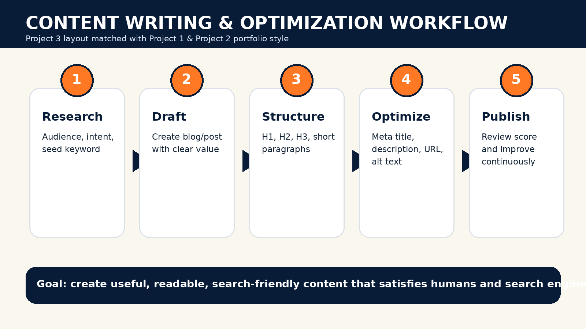
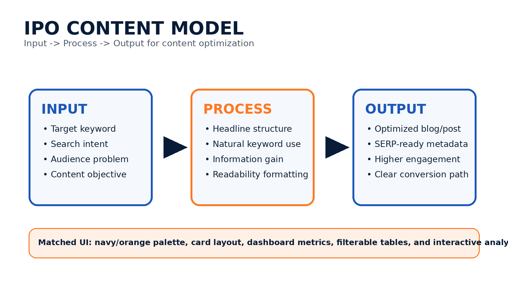
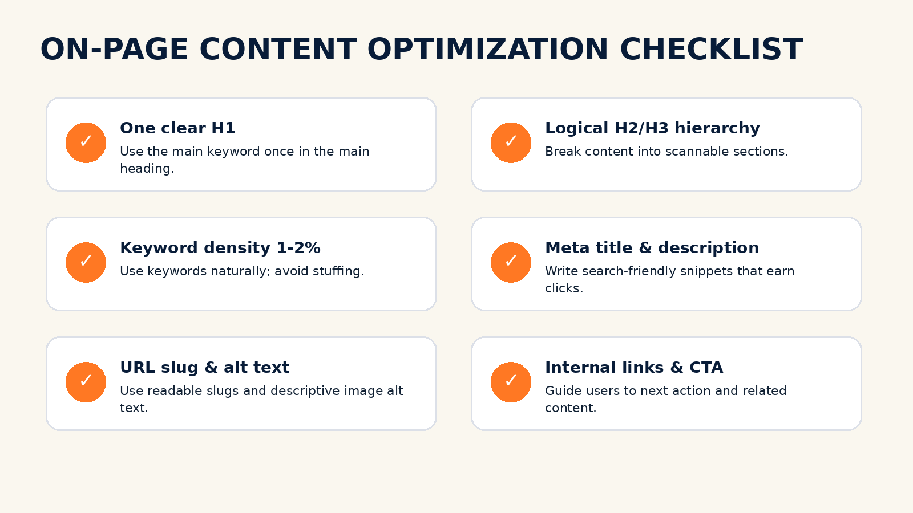

Optimized Content Assets
Each content asset includes a target keyword, title, URL slug, metadata, heading structure, and optimization score.
Professional Project 3 website matched with the Project 1 and Project 2 UI/layout: same dashboard style, filterable tables, workflow cards, navy-orange theme, and beginner-friendly working JavaScript.
View ProjectProject 3 focuses on writing and optimizing content for digital platforms. The goal is to create content that is readable for humans and understandable for search engines. This project uses the same polished portfolio layout used in Project 1 and Project 2.
Write original content, use keywords naturally, optimize headings, improve readability, and prepare metadata for search visibility.
Tanya Chauhan
Digital Marketing Internship
Project 3: Content Writing & Optimization
Each content asset includes a target keyword, title, URL slug, metadata, heading structure, and optimization score.
The layout below follows structural SEO principles: one H1, clear H2/H3 sections, natural keyword placement, optimized metadata, readable paragraphs, and CTA-focused formatting.
H1: One main heading with primary keyword.
H2/H3: Logical sections for readability and crawlability.
Keyword Density: 1-2% natural usage, no stuffing.
Metadata: Clear title and description for clicks.
Filter the keyword database by search intent, cluster, or priority. This works offline directly from the included JSON file.
| # | Keyword | Intent | Cluster | Volume | Allintitle | KGR | Priority | Placement |
|---|
Type or paste content below. The tool estimates word count, keyword count, density, heading count, and an overall simple SEO score.
Word Count: 55 | Keyword Uses: 2 | Density: 3.64% | Headings: 0
The project includes matching infographics and workflow images in the same modern navy/orange style as Project 1 and Project 2.
Audience + intent
Useful content
H1/H2/H3
SEO elements
Review + improve



HTML, CSS, JavaScript, JSON data, comments, and assets included.
DOCX report, PDF report, PPT presentation, README, and content database included.
Theme toggle, article tabs, keyword filters, analyzer, responsive cards, dashboard metrics, and diagrams.